Odo mencatat shift antar makanan dan angkut penumpangmu, kilometer yang kamu tempuh untuk kerja, dan biaya kerjamu. Saat lapor pajak, Odo memberi semua yang dibutuhkan akuntan atau myTax. Menyiapkannya hanya sekitar 5 menit.
Tidak perlu mengunduh apa pun dari App Store atau Google Play. Odo dibuka dari tautan, lalu ada di layar utama seperti aplikasi biasa. Pemakaiannya gratis.
Cukup sekali. Setelah itu, Odo terbuka dengan sekali ketuk, layar penuh, dan tetap jalan tanpa sinyal.
iPhone (Safari)
Ketuk tombol Bagikan di bawah layar (kotak dengan panah ke atas).
Gulir ke bawah dan ketuk Tambah ke Layar Utama.
Ketuk Tambah di pojok kanan atas.
Mulai sekarang, buka Odo dari ikon Od yang baru di layar utama.
Android (Chrome)
Ketuk menu ⋮ (tiga titik, kanan atas).
Ketuk Instal aplikasi atau Tambahkan ke layar utama.
Ketuk Instal atau Tambahkan.
Buka Odo dari ikon baru di layar utama.
Android (Samsung Internet)
Ketuk menu ≡ (tiga garis, kanan bawah).
Ketuk Tambah halaman ke, lalu Layar Depan.
Ketuk Tambah.
Ada ikon instal kecil di bilah alamat? Mengetuknya juga sama saja.
💡 Tidak menemukan tombolnya? Simpan Odo sebagai bookmark. iPhone: Bagikan → Tambah Bookmark. Chrome: ⋮ → ketuk bintang. Samsung Internet: ≡ → Tambah halaman ke → Bookmark.
3
Buat akun gratis
Tanpa akun, catatanmu hanya ada di HP ini. Dengan akun, Odo mencadangkan semuanya, dan kamu bisa masuk di HP baru lalu mendapatkan semuanya kembali.
Ketuk ikon orang di kanan atas.
Ketuk Akun baru.
Ketik email dan buat kata sandi (minimal 6 karakter).
Ketuk Buat akun. Kalau diminta, buka email dari Odo dan ketuk tautannya untuk konfirmasi, lalu masuk.
1. Ketuk ikon orang
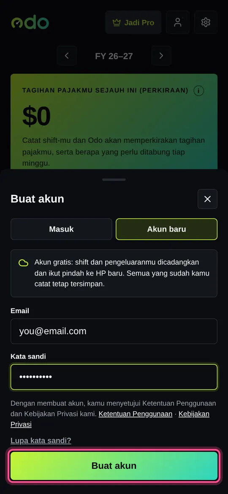
2. Akun baru → Buat akun
💡 HP baru? Buka tautannya, ketuk ikon orang, pilih Masuk, dan pakai email serta kata sandi yang sama. Catatanmu kembali. Titik hijau di ikon orang berarti sudah tercadang.
4
Beri tahu Odo tentang dirimu (1 menit)
Ketuk ikon roda gigi di kanan atas untuk membuka Pengaturan.
Kendaraanmu: pilih Mobil, Motor, atau Sepeda.
Wilayah: biarkan Australia.
Perkiraan total penghasilan tahun ini: perkiraan kasar semua penghasilanmu, termasuk pekerjaan lain. Odo memakainya untuk menghitung tarif pajakmu.
Ketuk Simpan pengaturan di bawah.
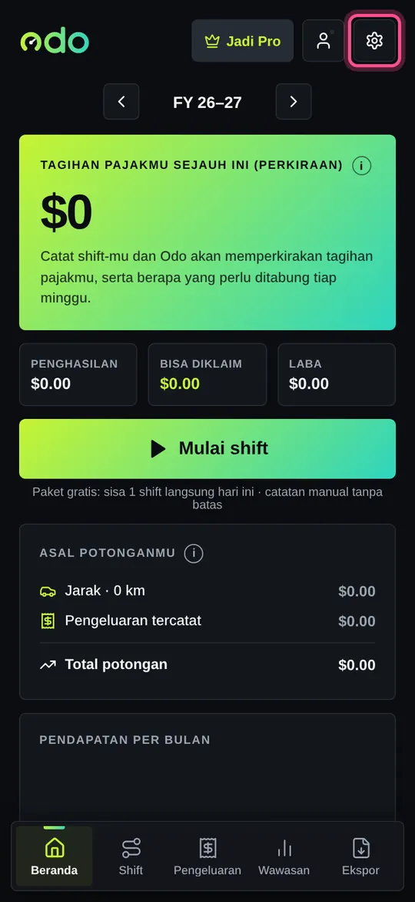
1. Ketuk roda gigi
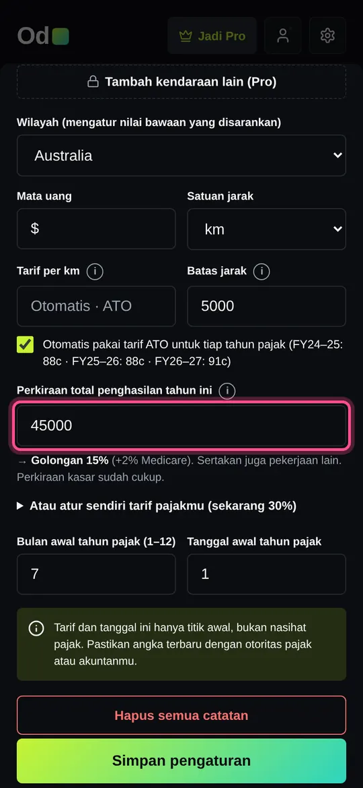
2. Isi perkiraan penghasilan
💡 Naik sepeda atau motor? Odo beralih ke Mode rider. Tarif per km hanya untuk mobil, jadi potonganmu berasal dari biaya: HP, perbaikan, baterai, tas, dan perlengkapan.
5
Catat setiap shift
Kilometer biasanya potongan pajak terbesarmu. Cukup dua ketukan per shift.
Saat mulai kerja: ketuk Mulai shift, pilih aplikasinya (Uber, DoorDash…), ketik angka odometer, lalu ketuk Mulai kerja. Odo boleh ditutup; waktunya tetap berjalan.
Saat selesai: ketuk Akhiri shift, ketik angka odometer yang baru dan pendapatanmu, lalu ketuk Simpan shift.
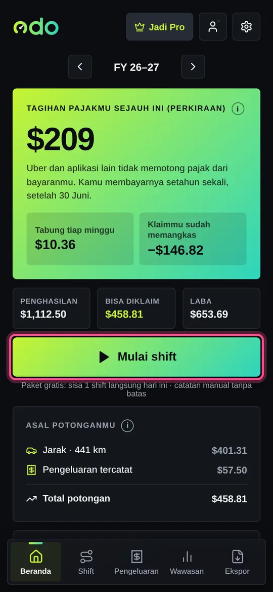
1. Ketuk Mulai shift
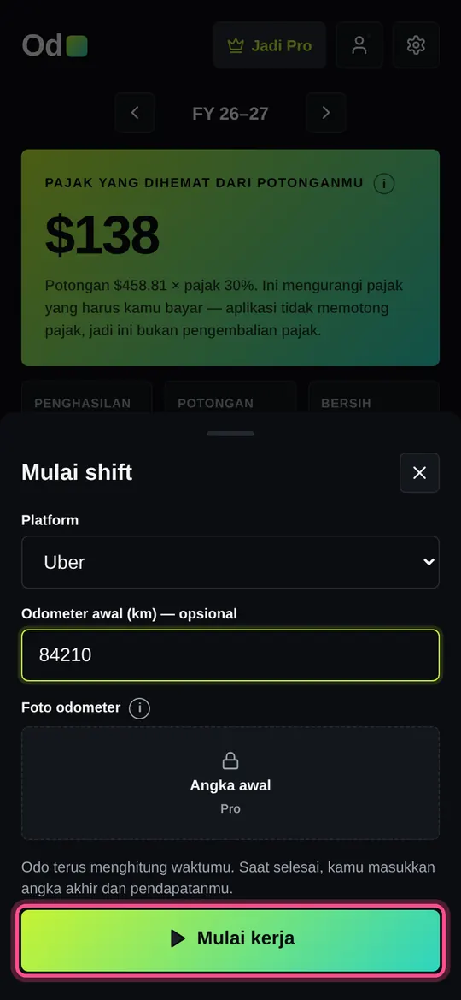
2. Odometer → Mulai kerja
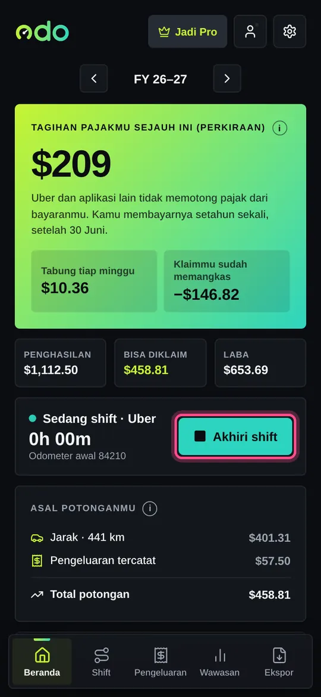
3. Selesai kerja: Akhiri shift
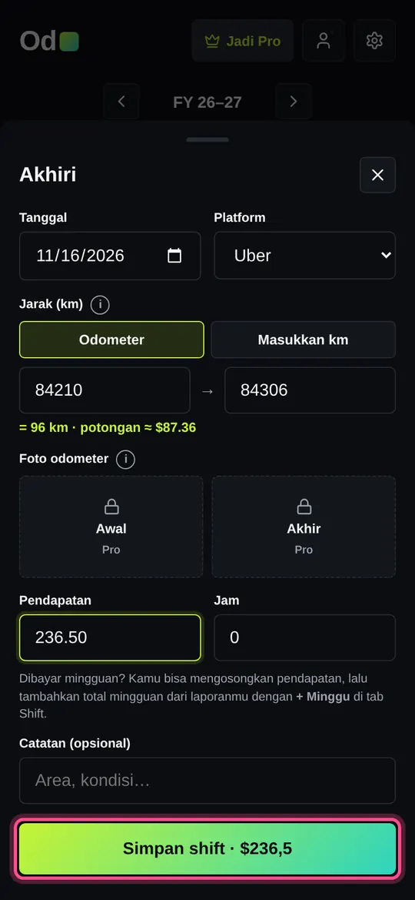
4. Odometer akhir + pendapatan → Simpan
PROFoto odometermu
Dengan Odo Pro, ketuk Angka awal saat mulai shift untuk memotret odometer, dan tambahkan foto Akhir saat selesai. Setiap foto tersimpan bersama shift, lengkap dengan tanggal dan jam, dan dicadangkan ke akunmu.
Kenapa ini penting: ATO bisa memintamu menunjukkan cara menghitung kilometer kerja, dan kamu wajib menyimpan catatan selama 5 tahun setelah lapor. Foto di awal dan akhir setiap shift adalah bukti kuat yang sulit dibantah. Kamu juga tidak akan kehilangan atau salah tulis angka, meski ganti HP. Saat lapor pajak, Ekspor → Unduh foto memberi agen pajakmu semua foto dalam satu ZIP.
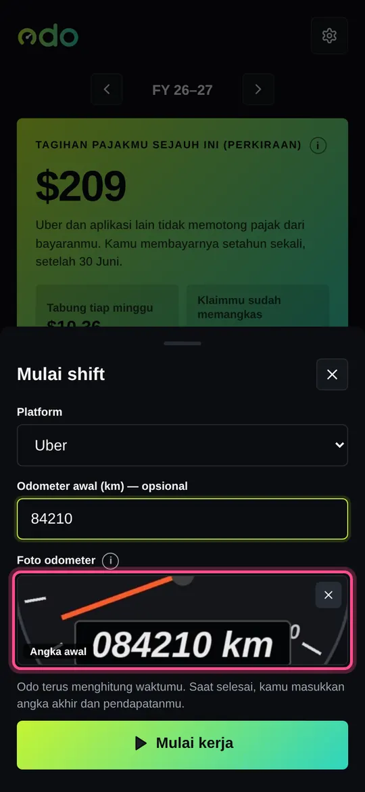
Foto odometer tersimpan bersama shift
💡 Lupa mulai? Tab Shift → + Shift dan isi belakangan. Dibayar mingguan? Tab Shift → + Minggu dan salin total dari laporan mingguanmu. Hanya km kerja yang dihitung: perjalanan dari rumah ke order pertama mungkin tidak dihitung.
6
Tambahkan biaya kerjamu
Buka tab Pengeluaran dan ketuk Tambah pengeluaran.
Pilih kategori (misalnya HP & internet) dan ketik jumlahnya.
Geser Untuk kerja sesuai bagian yang dipakai kerja. HP dipakai 70% untuk antar? Atur ke 70%.
Ketuk Simpan.
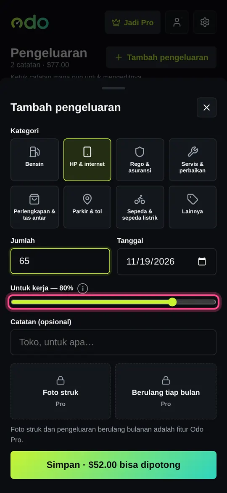
Atur berapa bagian untuk kerja
⚠️ Pakai mobil? Jangan tambahkan bensin, rego, asuransi, atau servis. Tarif per km ATO (91c per km di 2026–27) sudah mencakup semua itu. Parkir dan tol boleh ditambahkan.
7
Cek angka-angkamu
Pajak yang dihemat dari potonganmu
Seberapa banyak pajak yang berkurang berkat klaim kerjamu. Ini bukan pengembalian pajak: aplikasi tidak memotong pajak dari bayaranmu, jadi biasanya kamu tetap berutang pajak.
Penghasilan / Potongan / Bersih
Berapa yang kamu dapat, berapa yang bisa diklaim, dan kira-kira labamu.
Sisihkan sekitar $… per minggu
Tabung sebanyak itu tiap minggu supaya tagihan pajak di bulan Juli tidak bikin kaget.
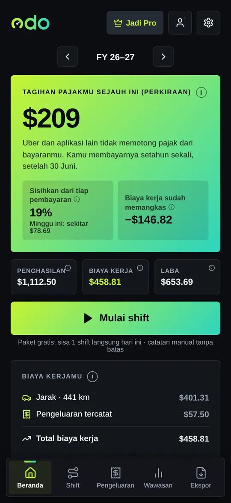
Setahun dalam sekilas
💡 Ketuk ikon ⓘ mana pun untuk penjelasan singkat.
8
Saat lapor pajak: ekspor
Setelah 30 Juni, buka tab Ekspor.
Unduh shift, pengeluaran, dan ringkasan. Bisa dibuka di Excel atau Google Sheets.
Kirim ke agen pajakmu, atau pakai totalnya di myTax.
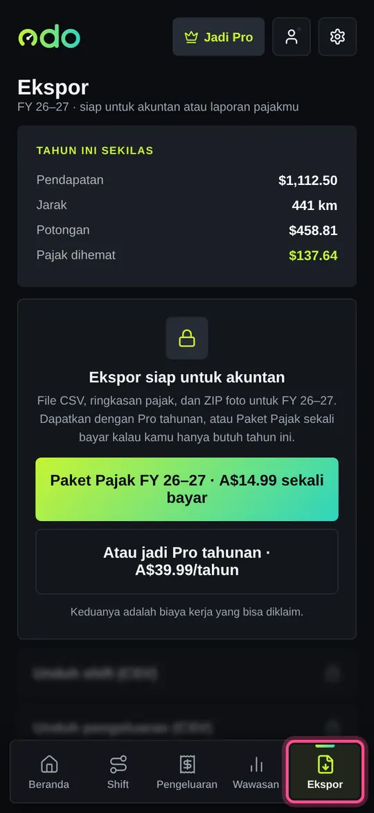
Semua yang dibutuhkan akuntanmu
💡 Ekspor termasuk di Pro tahunan, atau beli Paket Pajak sekali bayar (A$14.99) untuk satu tahun saja. Keduanya biaya kerja yang bisa diklaim.
Butuh bantuan?
Panduan lengkap: Pengaturan → Cara memakai Odo, atau panduan online.
Ada pertanyaan? Pengaturan → Bantuan & dukungan. Kalau kamu sudah masuk, kami membalas langsung di aplikasi.
Odo adalah alat pencatatan, bukan nasihat pajak. Pastikan aturan terbaru di ato.gov.au atau dengan agen pajak terdaftar. · Diperbarui 17 November 2026